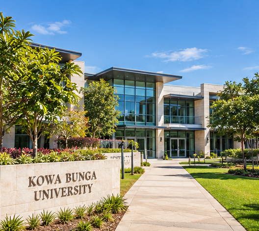

About Kowa Bunga University
Learn. Discover. Inspire.
Our History
Kowa Bunga University (KBU) is an Australian university located in Queensland. The university was established in 1998 with the goal of providing students with high-quality education and practical skills for an ever-changing world.
What began as a small educational institution has grown into a diverse university community offering programmes across science, commerce and engineering. Over the years, KBU has continued to develop its facilities, academic programmes and student services to support the next generation of professionals and innovators.
Our Vision
To be a forward-thinking university that inspires students to learn, innovate and make a positive contribution to their communities and the wider world.
Our Mission
Our mission is to provide accessible, high-quality education through academic excellence, practical learning and innovation. We aim to prepare our students with the knowledge, skills and confidence required to succeed in their chosen careers.
Our Campus
Kowa Bunga University is located in Queensland, Australia. Our modern campus provides a welcoming environment where students can study, collaborate and enjoy university life.
Campus facilities include modern lecture rooms, computer laboratories, engineering workshops, science laboratories, a university library, collaborative study areas and student recreational spaces.
The campus also provides access to sporting facilities, student support services, cafés and outdoor spaces where students can relax between classes.

Our Values
Innovation
We encourage creative thinking and new ideas that help solve real-world problems.
Excellence
We strive for excellence in teaching, learning and student development.
Community
We promote a supportive and inclusive university community where students can succeed together.